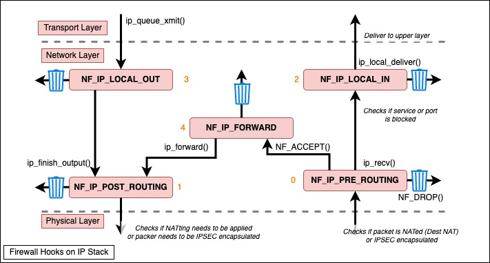
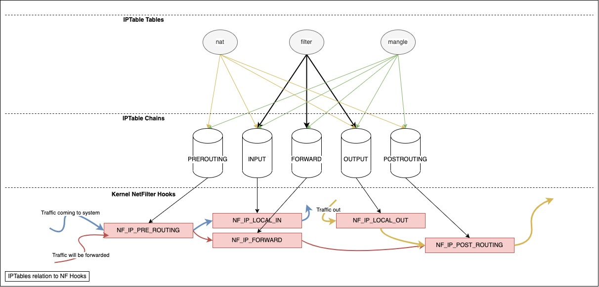

DRAFT Linux Networking Part 2 : Firewalling in the Linux Net Stack
Table Of Contents
Introduction
In linux, Firewalling is briefly done in steps, Hooks that listen and take action in some particular places in the Kernel, and Tables that include the rules that will be implemented on these hooks.
Some concepts
- Packet Mangling : refers to modification of the IP header, like changing TTL for example, to be clear, there are 3 concepts, Filtering, NATing, which is kind of mangling since it changes the IP Header, and Mangling, which extends NATing by being able to change things like the TTL, and the TOS for example.
NF Diagram
This is how logically the Network Filter Hooks are embeded into the Linux Kernel, these are the same hooks used by IPTables to apply the rules :

So NetFilter has 5 hooks embeded in the linkux kernel in diffirent locations as the diagram above shows, these are NF_IP_PRE_ROUTING, NF_IP_LOCAL_IN, NF_IP_FORWARD, NF_IP_POST_ROUTING, AND NF_IP_LOCAL_OUT.
IPTables

In IP Tables we have 5 tables that have chains of rules, these tables can hook to one or more of the above NF Hooks, these tables are:
- filter (Default): most used one, this applies statefully to traffic.
- mangle: used to modify the IP Header of traffic.
- nat: no explanation needed.
- raw: used to mark traffic to not conn-track using net filter’s connection tracking mechanism.
- security: used in conjunction with SELinux.
You can list the rules for each table as follows :
# -L List , -v Verbose , -n Numeric , -t Table , tables (mangle,nat,filter(Default))
$ iptables -L -v -n -t TABLE_NAME
Chain INPUT (policy ACCEPT 0 packets, 0 bytes)
pkts bytes target prot opt in out source destination
22M 1415M ACCEPT tcp -- * * 192.168.1.139 0.0.0.0/0 multiport dports 5671,5672 /* 001 amqp incoming amqp_192.168.1.139 */
# To list chains for each table
# iptables --list -t nat
Chain PREROUTING (policy ACCEPT)
target prot opt source destination
Chain INPUT (policy ACCEPT)
target prot opt source destination
Chain POSTROUTING (policy ACCEPT)
target prot opt source destination
Chain OUTPUT (policy ACCEPT)
target prot opt source destination
To clarify more, found this diagram at this link , this diagram shows clearly how raw table is applied before connection tracking takes places.

You can see the tracked connections and theirs state () under /proc/net/nf_conntrack :
cat -n /proc/net/nf_conntrack | grep dport=22
853 ipv4 2 tcp 6 299 ESTABLISHED src=192.168.1.138 dst=192.168.1.139 sport=33290 dport=22 src=192.168.1.139 dst=154.186.196.59 sport=22 dport=33290 [ASSURED] mark=0 secctx=system_u:object_r:unlabeled_t:s0 zone=0 use=2
Firewalld
Building upon Net Filter hooks and IPtables/NFtables, we have Firewalld acting as a frontend,
BP Filter
A new approach has been introduced called BPF, which utilizes the eBPF tools, comunity already gave up on NFTables and skipped rightly to BPFilter, eBPF programs are delivered using one of two ways, either using XDP early in RX path by attaching the eBPF program to a device (XDP only handles Recieved traffic), or using tc . (eBPF is supported from Kernel 3.10 and above)
Extra tools
tc (Traffic Control)
tc can be used to like IPtables, and it also can be used to modify the Packets early on in the process of receival.
Install tc on CentOS # dnf install iproute-tc
tc uses three concepts:
- qdiscs which are short for Queues, each interface may have one or more queues assigned to it, which the Kernel sends and reads from.
- class each interface can have multiple queues assigned to diffirent classes, this helps to assign diffirent behavior to each class,
- filter is the way tc marks a packet to a queue and a class.
There are multiple types of Classless qdiscs that can be used, like the FIFO qdisc, and our famous RED qdesc from the Networking domain.
For Classful qdisc, we have examples just like from teh networking world, like CBQ(Class based Queueing), PRIO(allows for prioritization of traffic).
You can see from the below output, that we hve 2 interfaces on this VM, each has one qdisc (Queue) assigned :
$ tc qdisc show
qdisc noqueue 0: dev lo root refcnt 2
qdisc fq_codel 0: dev enp0s3 root refcnt 2 limit 10240p flows 1024 quantum 1514 target 5.0ms interval 100.0ms memory_limit 32Mb ecn
qdisc fq_codel 0: dev enp0s8 root refcnt 2 limit 10240p flows 1024 quantum 1514 target 5.0ms interval 100.0ms memory_limit 32Mb ecn
References
- Netfilter - Linux Foundation Wiki
- A Deep Dive into Iptables and Netfilter Architecture (Article)
- How Linux Works, 3rd Edition: What Every Superuser Should Know, by Brian Ward (Book)
- BPFilter: the next generation firewall for Linux (Article)
- Network Debugging with eBPF - Redhat Developers (Article)
- Using eBPF-TC to securely mangle Packets (Article)